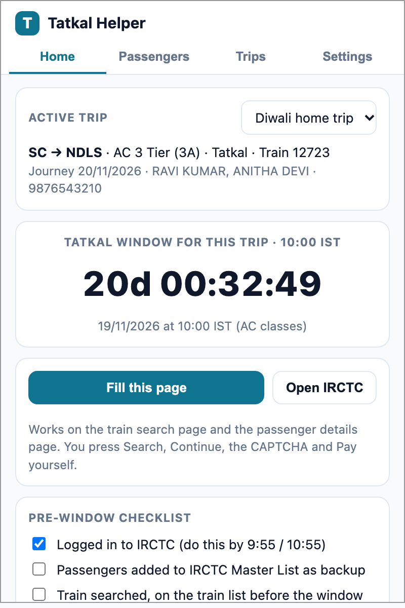
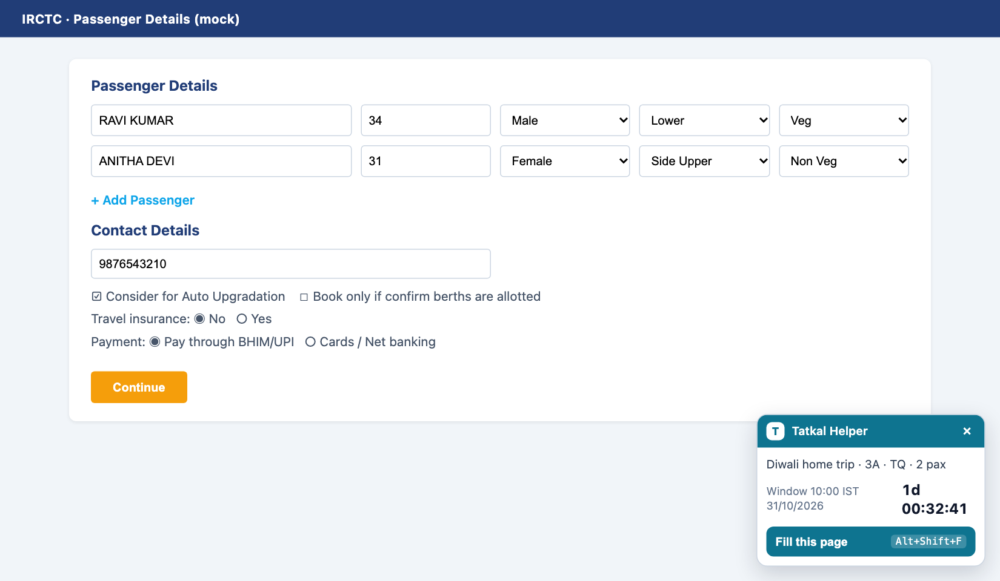
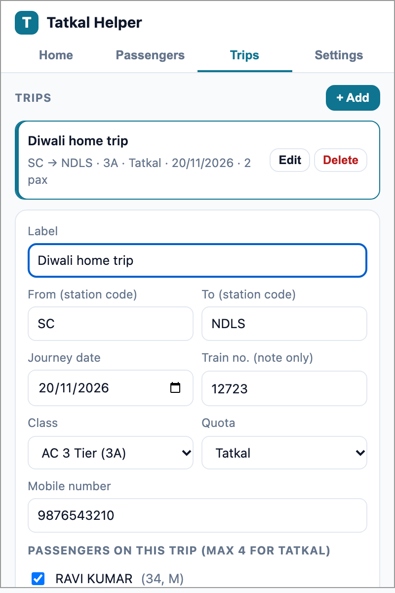
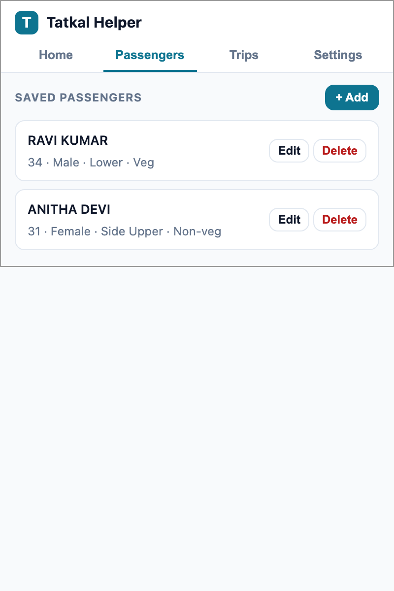
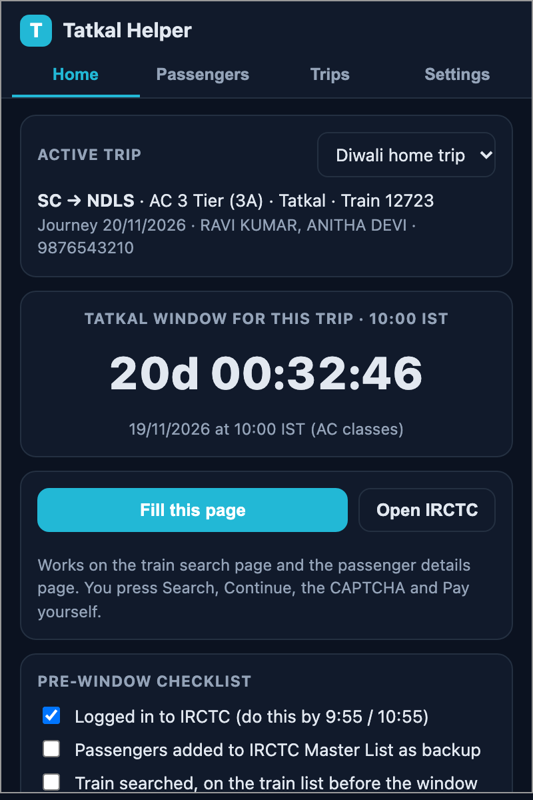

Save your passengers once. On booking day the passenger page fills itself in a second, and a countdown with alerts tells you exactly when the 10:00 / 11:00 IST window opens for your date.
You still press every button. No auto-login, no auto-submit, no CAPTCHA tricks, no payment handling. Bots get IRCTC accounts suspended; this is an autofill, not a bot.

Name, age, gender, berth and food preference, optional ID. Reuse them on every trip.
Search page and passenger page. Adds rows, fills every passenger, mobile, preferences, pre-selects UPI. Alt+Shift+F.
Knows the rule: one day before the journey, 10:00 IST for AC, 11:00 for non-AC. Badge shows minutes, then GO.
Notifications 10 and 2 minutes before. A pre-window checklist so 9:59 is calm, not chaos.
No server, no analytics, no network calls. Data stays in your browser. Export a backup any time.
If IRCTC changes a field, the toast names it and the rest still fills. Fixes are usually a one-line selector.
Install. Download the zip, unzip, open chrome://extensions, turn on Developer mode, Load unpacked, pick the folder.
Set up once. Add passengers, create a trip with route, date, class, quota and mobile. Add the same passengers to IRCTC's Master List as a backup.
Booking day. Alerts fire. Log in, open the search page, press Fill, press Search. When the badge says GO, click your train and Book Now.
Passenger page. Press Fill again. Review, Continue, solve the CAPTCHA yourself, approve the UPI request on your phone.




No, and it never will. It fills form fields on pages you opened. You press Search, Book Now, Continue, the CAPTCHA and Pay.
IRCTC flags automated browsing such as Selenium or request bots. This extension does none of that; it behaves like a form autofill in your normal session. IRCTC's terms discourage all helper tools, so use your own judgement.
Use both. Master List saves most typing. Tatkal Helper also fills the mobile number, preferences and payment option, fills the search page, and adds the countdown, alerts and checklist.
A listing needs review and may be rejected because of IRCTC's stance on helper tools. Load unpacked takes two minutes and needs no account.
In chrome.storage.local on your machine. Nothing is sent anywhere.